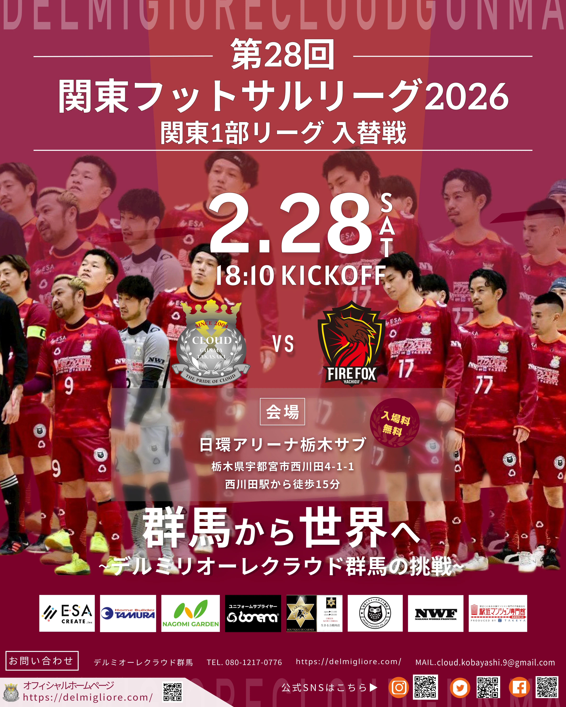
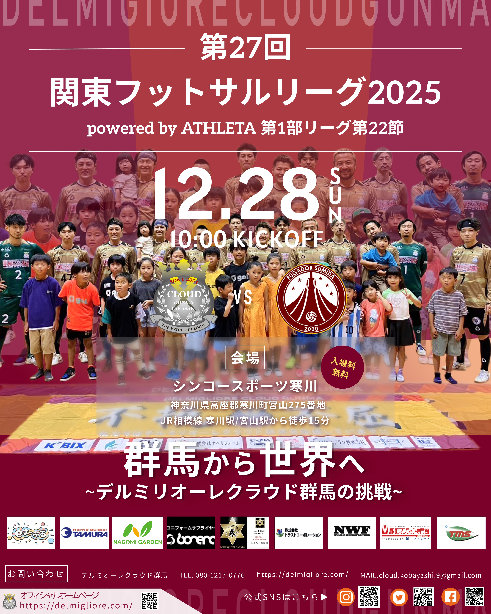
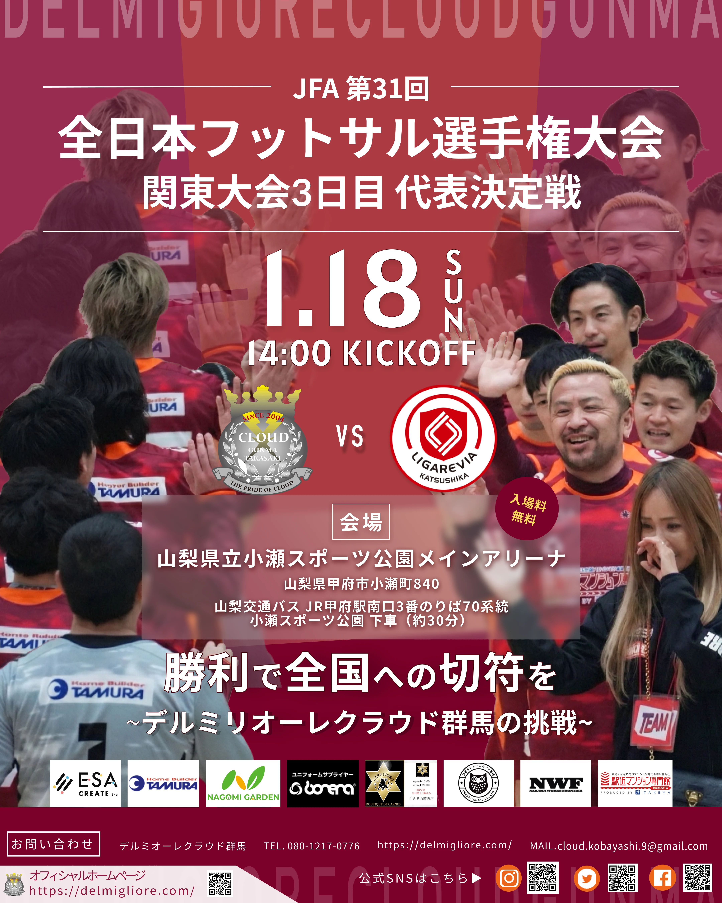
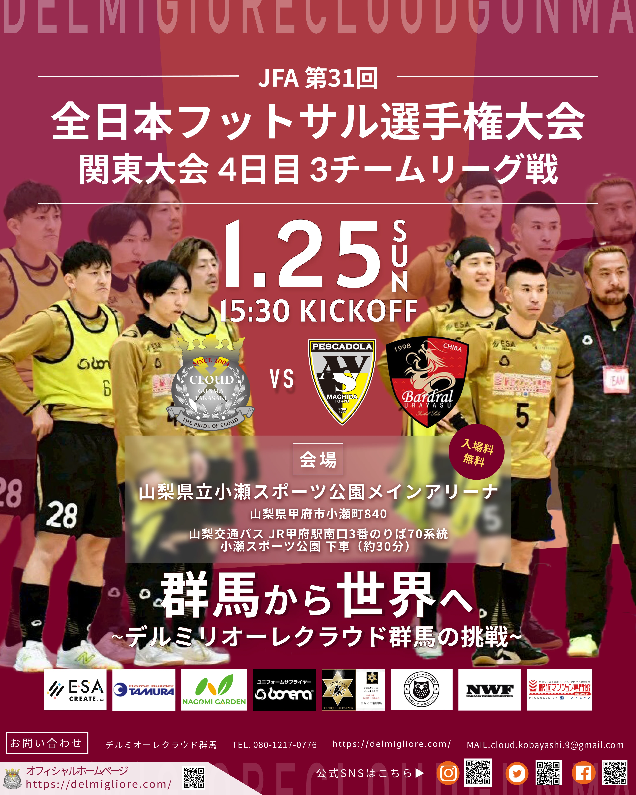

試合情報をひと目で確認できる情報設計
大会名、試合日時、対戦カード、会場など、告知に必要な情報量が多いため、すべてを同じ強さで見せないよう優先順位をつけています。
特に試合日とキックオフ時刻を大きく配置し、その次に対戦カード、会場情報へ視線が進むよう文字サイズや配置を調整しています。
SNSなどで短時間だけ見た場合でも、『いつ・誰と・どこで試合をするのか』を確認できることを基準にしています。
試合日時・対戦カード・会場をひと目で伝えながら、選手写真の迫力を活かした試合告知POPを継続して制作しています。

クライアント
デルミリオーレクラウド群馬
制作期間
2025年10月〜（継続制作）
制作体制
ディレクター 1名 / デザイナー 1名（本人）
制作物
試合告知POP
制作目的
試合日時・対戦カード・会場などの情報を短時間で把握でき、試合への関心につながる告知物を制作すること。
ターゲット
チームのファン / 地域のスポーツ・フットサルに関心のある方
担当範囲
提供素材の切り抜き・色味・明るさ調整 / 写真の合成・再配置 / 情報整理 / レイアウト / テキスト調整
使用ツール
Figma / Photoshop
制作時間
1点あたり約2〜3時間
デルミリオーレクラウド群馬の試合告知POPを継続して制作しています。
ディレクターから試合日程、対戦相手、会場、使用する写真などの情報・素材を共有してもらい、それをもとにデザインを制作しています。
Photoshopで選手写真の切り抜きや色味・明るさの調整、必要に応じて写真の合成や再配置を行い、Figmaで試合情報と合わせて全体のレイアウトを組み立てています。
日時・対戦カード・会場など、観戦を検討するために必要な情報を先に読み取れるよう優先順位を整理しつつ、スポーツらしい勢いや選手写真の迫力も残すことを意識しています。
大会名、試合日時、対戦カード、会場など、告知に必要な情報量が多いため、すべてを同じ強さで見せないよう優先順位をつけています。
特に試合日とキックオフ時刻を大きく配置し、その次に対戦カード、会場情報へ視線が進むよう文字サイズや配置を調整しています。
SNSなどで短時間だけ見た場合でも、『いつ・誰と・どこで試合をするのか』を確認できることを基準にしています。
提供される写真をそのまま背景として使用すると、選手と文字が重なり、試合情報が読みにくくなる場合があります。
そこでPhotoshopで選手を切り抜き、背景に大きく配置する写真と、前景で見せる選手を分けて構成しています。
必要に応じて人物の位置を調整し、日時や対戦カードを配置できるスペースをつくることで、写真の迫力を残しながら情報が埋もれないよう調整しています。
チームカラーを基調とした配色や基本的な情報構成は継承しながら、使用できる写真や大会、対戦相手に合わせて毎回レイアウトを調整しています。
同じテンプレートへ情報を差し替えるだけではなく、選手の人数や写真の向き、大会名の長さなどに応じて構成を変え、シリーズとしての統一感と各試合の違いが両立するよう制作しています。
ディレクターを窓口として、情報・素材の共有から最終データ提出まで進めています。


